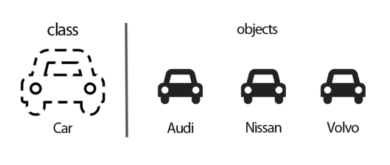

5. Functions and Class#
5.1. Functions#
5.1.1.The Importance of Python Functions#
Abstraction and Reusability: Replicate the code you will use over and over again.
Modularity: Functions allow complex processes to be broken up into smaller steps.
Namespace Separation: It allows you to use variables and used within a Python function even if they have the same name as variables defined in other functions or in the main program.
5.1.2. Basic structure of a function#
A function requires parameters, code to execute and the return function. The def keyword introduces a new Python function definition.
This is the basic structure:
Code
return final_output
import pickle
import pandas as pd
import numpy as np
def calculator(x, y):
if x < y:
print("division out range")
result = np.nan
else:
result = x/y
return result
calculator(4, 3)
1.3333333333333333
def calculator( x, y, z ):
result = x * y * z
return result
calculator( 158, 38, 10 )
60040
calculator( 4, 7, 0)
0
return1 = calculator( 4, 7 )
return1
---------------------------------------------------------------------------
TypeError Traceback (most recent call last)
Cell In[7], line 1
----> 1 return1 = calculator( 4, 7 )
2 return1
TypeError: calculator() missing 1 required positional argument: 'z'
5.1.3. Function without return function#
When we define a function without the return function, the generated function does not return any output.
x2 = 5
y2 = 10
def calculator_square( x, y ):
x2 = x * x
y2 = y * y
result = x2 * y2
return result
calculator_square( x2, y2 )
2500
calculator_square( x, y )
2500
return2 = calculator_square( 4, 7 )
return2
784
5.1.4. Multiple objects for return#
The output of a function can have several objects. These objects are stored in a tuple by default.
def calculator_square( x, y ):
x2 = x * x
y2 = y * y
result = x2 * y2
return result, x2, y2
calculator_square(3, 4)
(144, 9, 16)
result4 = calculator_square( 8, 9 )
result4
(5184, 64, 81)
type(result4)
tuple
result4[2]
81
We can name the outputs in one line.
output_1 = result4[0]
output_2 = result4[1]
output_3 = result4[2]
output_2
64
result5, x_2, y_2 = calculator_square( 8, 9 )
5.1.5. If condition with return#
def calculator_square( x, y ):
x2 = x * x
y2 = y * y
result = x2 * y2
if ( 200 >= result ):
return result, x2, y2
elif ( 500 >= result > 200 ):
print( "Large number. Get only the result variable")
return result
else:
print( "Too large number. Do not return variables!")
calculator_square( 2, 10 )
Large number. Get only the result variable
400
calculator_square( 8, 2 )
Large number. Get only the result variable
256
calculator_square( 8, 10 )
Too large number. Do not return variables!
5.1.6. Default values to parameters#
We can define default values to parameters.
def calculator_base_10(x, y = 10):
result = x*y
return result
calculator_base_10(15, y = 9)
135
def calculator_base_5( x , y = 5 ):
result = x * y
return result
calculator_base_5( x )
25
result3 = calculator_base_5( 7 )
result3
35
5.1.7. Specify the type of a parameter and the type of the return type of a function#
It is important to note that Python won’t raise a TypeError if you pass a float into x, the reason for this is one of the main points in Python’s design philosophy: “We’re all consenting adults here”, which means you are expected to be aware of what you can pass to a function and what you can’t. If you really want to write code that throws TypeErrors you can use the isinstance function to check that the passed argument is of the proper type or a subclass of it like this:
def calculator_base_5( x : int, y : float ) -> float:
result = x * y
return result
x2**"Trea"
---------------------------------------------------------------------------
TypeError Traceback (most recent call last)
C:\Users\ALEXAN~1\AppData\Local\Temp/ipykernel_39524/3845650038.py in <module>
----> 1 x2**"Trea"
TypeError: unsupported operand type(s) for ** or pow(): 'int' and 'str'
calculator_base_5( 10.0, 15 )
150.0
def calculator_base_5( x : int, y : float ) -> float:
if not isinstance( x , int ):
raise TypeError( "X variable is not int type.")
if not isinstance( y, float ):
raise TypeError( "Y variable is not float type.")
result = x * y
return result
calculator_base_5( 5, 3.8)
19.0
calculator_base_5( 4.5, 3)
---------------------------------------------------------------------------
TypeError Traceback (most recent call last)
C:\Users\ALEXAN~1\AppData\Local\Temp/ipykernel_9200/471413585.py in <module>
----> 1 calculator_base_5( 4.5, 3)
C:\Users\ALEXAN~1\AppData\Local\Temp/ipykernel_9200/2980220040.py in calculator_base_5(x, y)
2
3 if not isinstance( x , int ):
----> 4 raise TypeError( "X variable is not int type.")
5
6 if not isinstance( y, float ):
TypeError: X variable is not int type.
calculator_base_5( 4, 3 )
---------------------------------------------------------------------------
TypeError Traceback (most recent call last)
C:\Users\ALEXAN~1\AppData\Local\Temp/ipykernel_9200/4218193570.py in <module>
----> 1 calculator_base_5( 4, 3 )
C:\Users\ALEXAN~1\AppData\Local\Temp/ipykernel_9200/2980220040.py in calculator_base_5(x, y)
5
6 if not isinstance( y, float ):
----> 7 raise TypeError( "Y variable is not float type.")
8
9 result = x * y
TypeError: Y variable is not float type.
calculator_base_5( 4, 3.8 )
15.2
5.1.8. Local variables VS Global variables#
Variables |
Definition |
|---|---|
Global Variables |
Variables declared outside a function. |
Local Variables |
Variables declared inside a function. |
The parameters and the variables created inside a function are local variables. They take values when the function is executed; however, they do not exist outside the function since they belong to a different namespace. A namespace is a system that has a unique name for every object in Python. When a Python function is called, a new namespace is created for that function, one that is distinct from all other namespaces that already exist. That is the reason we can use various functions with parameters and variables with the same name. Additionally, it explains why the variables generated inside a function do not exist outside the defined function namespace.
Example#
pwd
'C:\\Users\\Alexander\\Documents\\GitHub\\Diplomado_PUCP\\Lecture_5'
%run "function_1.ipynb"
def lower_case( string1 ):
str_result = string1.lower()
return str_result
lower_case( "ADRIANA")
'adriana'
str_result
---------------------------------------------------------------------------
NameError Traceback (most recent call last)
C:\Users\ALEXAN~1\AppData\Local\Temp/ipykernel_9200/2404635967.py in <module>
----> 1 str_result
NameError: name 'str_result' is not defined
result2 = lower_case( "DIPLOMA")
result2
'diploma'
Now, we try to call the variable str_result.
str_result
---------------------------------------------------------------------------
NameError Traceback (most recent call last)
C:\Users\ALEXAN~1\AppData\Local\Temp/ipykernel_9200/2404635967.py in <module>
----> 1 str_result
NameError: name 'str_result' is not defined
We can see that str_result is not defined. It does not exist in the main space. It was defined in the namespace of lower_case. In concluion, str_result is a local variable.
result2 is a global variable.
5.1.9. Args#
The special syntax *args in function definitions in python is used to pass a variable number of arguments to a function. The object *args is a tuple that contains all the arguments. When you build your code, you should consider *args as a tuple.
def calculator( *args ):
print( f"args is a {type( args )}" )
# Get the first value
result = args[ 0 ]
# Keep the rest of values
args1 = args[ 1: ]
# multiply all elements
for element in args1:
result = result * element
return result
In this example, the values 8, 9, 50 and 40 are storing in a list.
calculator( 8, 9, 50, 40, 10, 17 )
args is a <class 'tuple'>
24480000
We can use *args with a different name (e.g., *list_vars ). We should keep the asterisk (*).
def calculator( *list_vars ):
print( f"args is a { type( list_vars ) }" )
# Get the first value
result = list_vars[ 0 ]
# Keep the rest of values
list_vars1 = list_vars[ 1: ]
# multiply all elements
for element in list_vars1:
result = result * element
return result
calculator( 8, 9, 50, 40, 23, 20, 12 )
args is a <class 'tuple'>
794880000
5.1.10. Kwargs#
The special syntax *kwargs in function definitions in python is used to pass a keyworded, variable-length argument list. We use the name kwargs with the double star. The reason is because the double star allows us to pass through keyword arguments (and any number of them).
def calculator( *list_vars, **kwargs):
print( type( list_vars ) )
print( type( kwargs ) )
if ( kwargs[ 'function' ] == "Potencia" ) :
# Get the first value
result = potencia( list_vars )
elif ( kwargs[ 'function' ] == "multiplication" ) :
# Get the first value
result = list_vars[ 0 ]
# Keep the rest of values
list_vars2 = list_vars[ 1: ]
# multiply all elements
for element in list_vars2:
result = result * element
else:
raise ValueError( f"The function argument {kwargs[ 'function' ]} is not supported." )
return result
calculator( 4, 5, 6, 7, 8, function = "addition" )
<class 'tuple'>
<class 'dict'>
30
calculator( 4, 5, 6, 7, 8, function = "division" )
<class 'tuple'>
<class 'dict'>
---------------------------------------------------------------------------
ValueError Traceback (most recent call last)
<ipython-input-141-bf8334b8975c> in <module>
----> 1 calculator( 4, 5, 6, 7, 8, function = "division" )
<ipython-input-139-691a0f9b9fe8> in calculator(*list_vars, **kwargs)
21 result = result * element
22 else:
---> 23 raise ValueError( f"The function argument {kwargs[ 'function' ]} is not supported." )
24
25 return result
ValueError: The function argument division is not supported.
Excersise#
Importing a Dictionary#
The places_result dictionary stores information from a Google API request that aims to geolocate all the National Identity Management Commission establishments in Nigeria. We want to store the results in a Pandas DataFrame. We want to keep the name of the establishment and its coordiantes.
dictionary_places = open( r"..\_data\places_result", "rb")
places_result = pickle.load( dictionary_places )
# It is a dictionary
type( places_result )
dict
# See all the establishments
i = 0
while True:
try:
i = i + 1
print( places_result['results'][i]['name'] )
except:
break
National Identity Management Commission (Nimc)
National Identity Management Commission NIMC
National Identity Management Commission
National Identity Management Commission (Nimc)
National Identity Management Commission
National Identity Management Commission
National Identity Management Commission (Nimc)
National Identity Management Commission
National Identity Management Commission (Nimc)
National Identity Management Commission (Nimc)
National Identity Management Center
National Identity Management Commision (NIMC) Lagos
National Identity Management Commission
National Identity Management Commission (Nimc)
National Identity Management Commission Umuahia
National Identity Management Commission
National Identity Management Commission (Nimc)
National Identity Management Commission, Northwest Zonal Office
National Identity Management Commission Nimc
# We want to iterate over all the results to get the location of every point
places_result['results'][0]['geometry']['location']
{'lat': 9.065977, 'lng': 7.4549606}
places_result is a nested dictionary. It is composed of a list, dictionary, and a dictionary.
First, we are going to do it using a for loop. We are not going to use a function. After we get our expected results, we will define a function.
We can do it lists#
from tqdm import tqdm
# Lists
latitudes = []
longitudes = []
institutions = []
# define all the results
results = places_result[ 'results' ]
# loop para guardar cada uno de los elementos
for row in tqdm( range( 0 , len( results ) ) ):
# latitude
lat = results[ row ]['geometry']['location']['lat']
# Longitude
lng = results[ row ]['geometry']['location']['lng']
# nombre de la institution
institution = results[ row ]['name']
# Save results
latitudes.append( lat )
longitudes.append( lng )
institutions.append( institution )
# Diccionario
final_result = { 'Institution': institutions, 'Latitud' : latitudes, 'Longitud' : longitudes }
# Dataframe
df_result = pd.DataFrame( final_result )
df_result
100%|██████████████████████████████████████████████████████████████████████████████████████████| 20/20 [00:00<?, ?it/s]
| Institution | Latitud | Longitud | |
|---|---|---|---|
| 0 | National Identity Management Commission | 9.065977 | 7.454961 |
| 1 | National Identity Management Commission (Nimc) | 8.450151 | 4.542503 |
| 2 | National Identity Management Commission NIMC | 8.505730 | 8.531775 |
| 3 | National Identity Management Commission | 9.058854 | 7.468078 |
| 4 | National Identity Management Commission (Nimc) | 9.895973 | 8.931434 |
| 5 | National Identity Management Commission | 9.892295 | 8.917566 |
| 6 | National Identity Management Commission | 9.857233 | 7.967972 |
| 7 | National Identity Management Commission (Nimc) | 7.711656 | 8.526523 |
| 8 | National Identity Management Commission | 11.989994 | 8.489165 |
| 9 | National Identity Management Commission (Nimc) | 10.310332 | 9.826602 |
| 10 | National Identity Management Commission (Nimc) | 10.592473 | 7.449456 |
| 11 | National Identity Management Center | 5.471781 | 7.008344 |
| 12 | National Identity Management Commision (NIMC) ... | 6.617086 | 3.357951 |
| 13 | National Identity Management Commission | 6.460106 | 7.579009 |
| 14 | National Identity Management Commission (Nimc) | 9.076770 | 7.493777 |
| 15 | National Identity Management Commission Umuahia | 5.502502 | 7.517956 |
| 16 | National Identity Management Commission | 4.822006 | 7.007972 |
| 17 | National Identity Management Commission (Nimc) | 11.988203 | 8.496804 |
| 18 | National Identity Management Commission, North... | 10.543617 | 7.460988 |
| 19 | National Identity Management Commission Nimc | 4.849608 | 7.052736 |
We can do it using iteration over rows of a DataFrame#
df2 = pd.DataFrame( columns = ['Institution','Latitude','Longitud'] )
results = places_result['results']
for fila in tqdm(range( 0 , len( results ) )):
df2.loc[fila] = [results[ fila ]['name'], \
results[ fila ]['geometry']['location']['lat'], \
results[ fila ]['geometry']['location']['lng']]
df2
100%|█████████████████████████████████████████████████████████████████████████████████| 20/20 [00:00<00:00, 466.35it/s]
| Institution | Latitude | Longitud | |
|---|---|---|---|
| 0 | National Identity Management Commission | 9.065977 | 7.454961 |
| 1 | National Identity Management Commission (Nimc) | 8.450151 | 4.542503 |
| 2 | National Identity Management Commission NIMC | 8.505730 | 8.531775 |
| 3 | National Identity Management Commission | 9.058854 | 7.468078 |
| 4 | National Identity Management Commission (Nimc) | 9.895973 | 8.931434 |
| 5 | National Identity Management Commission | 9.892295 | 8.917566 |
| 6 | National Identity Management Commission | 9.857233 | 7.967972 |
| 7 | National Identity Management Commission (Nimc) | 7.711656 | 8.526523 |
| 8 | National Identity Management Commission | 11.989994 | 8.489165 |
| 9 | National Identity Management Commission (Nimc) | 10.310332 | 9.826602 |
| 10 | National Identity Management Commission (Nimc) | 10.592473 | 7.449456 |
| 11 | National Identity Management Center | 5.471781 | 7.008344 |
| 12 | National Identity Management Commision (NIMC) ... | 6.617086 | 3.357951 |
| 13 | National Identity Management Commission | 6.460106 | 7.579009 |
| 14 | National Identity Management Commission (Nimc) | 9.076770 | 7.493777 |
| 15 | National Identity Management Commission Umuahia | 5.502502 | 7.517956 |
| 16 | National Identity Management Commission | 4.822006 | 7.007972 |
| 17 | National Identity Management Commission (Nimc) | 11.988203 | 8.496804 |
| 18 | National Identity Management Commission, North... | 10.543617 | 7.460988 |
| 19 | National Identity Management Commission Nimc | 4.849608 | 7.052736 |
def dict_output( dictionary , output = 'tuples'):
# key results
results = dictionary['results']
# Lists
latitudes = []
longitudes = []
inst = []
# iterate over values and store in lists
# we are going to use lists apporach
for fila in range( 0 , len( results ) ):
# latitude
lat = results[ fila ]['geometry']['location']['lat']
# Longitude
lng = results[ fila ]['geometry']['location']['lng']
# nombre de la institucion
institucion = results[ fila ]['name']
# Save results
latitudes.append( lat )
longitudes.append( lng )
inst.append( institucion )
# Store all values in
# dictionary
results_dict = { 'Instituciones': institutions, 'Latitud' : latitudes, 'Longitud' : longitudes }
# pandas
results_pd = pd.DataFrame( results_dict )
# tuple
results_tuple = ( latitudes , longitudes , inst )
# We can use return with if condition
if output == 'dataframe':
return results_pd
elif output == 'dictionary':
return results_dict
elif output == 'tuple':
return results_tuple
else:
raise Exception( f'''The output value ({output}) is wrong. \nYou can only use `tuple`, `dataframe`, or `dictionary` as argument variables.''' )
dict_output( places_result, output = "tuple" )
([9.065977,
8.450151,
8.50573,
9.058854499999999,
9.895973,
9.892294699999999,
9.8572331,
7.711655800000001,
11.9899944,
10.310332,
10.592473,
5.4717813,
6.617086,
6.460105899999999,
9.07677,
5.5025021,
4.822006,
11.988203,
10.5436173,
4.8496083],
[7.4549606,
4.542503,
8.531774799999999,
7.468077600000001,
8.931434,
8.9175658,
7.967971899999998,
8.5265235,
8.4891647,
9.826602,
7.449456,
7.0083439,
3.357951,
7.579008999999999,
7.493777,
7.517955600000001,
7.0079724,
8.496804,
7.4609879,
7.0527365],
['National Identity Management Commission',
'National Identity Management Commission (Nimc)',
'National Identity Management Commission NIMC',
'National Identity Management Commission',
'National Identity Management Commission (Nimc)',
'National Identity Management Commission',
'National Identity Management Commission',
'National Identity Management Commission (Nimc)',
'National Identity Management Commission',
'National Identity Management Commission (Nimc)',
'National Identity Management Commission (Nimc)',
'National Identity Management Center',
'National Identity Management Commision (NIMC) Lagos',
'National Identity Management Commission',
'National Identity Management Commission (Nimc)',
'National Identity Management Commission Umuahia',
'National Identity Management Commission',
'National Identity Management Commission (Nimc)',
'National Identity Management Commission, Northwest Zonal Office',
'National Identity Management Commission Nimc'])
dict_output( places_result, output = "dataframe" )
| Instituciones | Latitud | Longitud | |
|---|---|---|---|
| 0 | National Identity Management Commission | 9.065977 | 7.454961 |
| 1 | National Identity Management Commission (Nimc) | 8.450151 | 4.542503 |
| 2 | National Identity Management Commission NIMC | 8.505730 | 8.531775 |
| 3 | National Identity Management Commission | 9.058854 | 7.468078 |
| 4 | National Identity Management Commission (Nimc) | 9.895973 | 8.931434 |
| 5 | National Identity Management Commission | 9.892295 | 8.917566 |
| 6 | National Identity Management Commission | 9.857233 | 7.967972 |
| 7 | National Identity Management Commission (Nimc) | 7.711656 | 8.526523 |
| 8 | National Identity Management Commission | 11.989994 | 8.489165 |
| 9 | National Identity Management Commission (Nimc) | 10.310332 | 9.826602 |
| 10 | National Identity Management Commission (Nimc) | 10.592473 | 7.449456 |
| 11 | National Identity Management Center | 5.471781 | 7.008344 |
| 12 | National Identity Management Commision (NIMC) ... | 6.617086 | 3.357951 |
| 13 | National Identity Management Commission | 6.460106 | 7.579009 |
| 14 | National Identity Management Commission (Nimc) | 9.076770 | 7.493777 |
| 15 | National Identity Management Commission Umuahia | 5.502502 | 7.517956 |
| 16 | National Identity Management Commission | 4.822006 | 7.007972 |
| 17 | National Identity Management Commission (Nimc) | 11.988203 | 8.496804 |
| 18 | National Identity Management Commission, North... | 10.543617 | 7.460988 |
| 19 | National Identity Management Commission Nimc | 4.849608 | 7.052736 |
dict_output( places_result, output = "dictionary" )
{'Instituciones': ['National Identity Management Commission',
'National Identity Management Commission (Nimc)',
'National Identity Management Commission NIMC',
'National Identity Management Commission',
'National Identity Management Commission (Nimc)',
'National Identity Management Commission',
'National Identity Management Commission',
'National Identity Management Commission (Nimc)',
'National Identity Management Commission',
'National Identity Management Commission (Nimc)',
'National Identity Management Commission (Nimc)',
'National Identity Management Center',
'National Identity Management Commision (NIMC) Lagos',
'National Identity Management Commission',
'National Identity Management Commission (Nimc)',
'National Identity Management Commission Umuahia',
'National Identity Management Commission',
'National Identity Management Commission (Nimc)',
'National Identity Management Commission, Northwest Zonal Office',
'National Identity Management Commission Nimc'],
'Latitud': [9.065977,
8.450151,
8.50573,
9.058854499999999,
9.895973,
9.892294699999999,
9.8572331,
7.711655800000001,
11.9899944,
10.310332,
10.592473,
5.4717813,
6.617086,
6.460105899999999,
9.07677,
5.5025021,
4.822006,
11.988203,
10.5436173,
4.8496083],
'Longitud': [7.4549606,
4.542503,
8.531774799999999,
7.468077600000001,
8.931434,
8.9175658,
7.967971899999998,
8.5265235,
8.4891647,
9.826602,
7.449456,
7.0083439,
3.357951,
7.579008999999999,
7.493777,
7.517955600000001,
7.0079724,
8.496804,
7.4609879,
7.0527365]}
dict_output( places_result, output = "list" )
---------------------------------------------------------------------------
Exception Traceback (most recent call last)
<ipython-input-165-e91397d3200f> in <module>
----> 1 dict_output( places_result, output = "list" )
<ipython-input-160-0ecbb021015a> in dict_output(dictionary, output)
47
48 else:
---> 49 raise Exception( f'''The output value ({output}) is wrong. \nYou can only use `tuple`, `dataframe`, or `dictionary` as argument variables.''' )
Exception: The output value (list) is wrong.
You can only use `tuple`, `dataframe`, or `dictionary` as argument variables.
5.2. Class#
A class is a user-defined blueprint or prototype from which objects are created. Classes provide a means of bundling data and functionality together. Creating a new class creates a new type of object, allowing new instances of that type to be made.

5.2.1. The Importance of Python Classes#
Classes are a way to organize your code into generic, reusable peices. At their best they are generic blueprints for things that will be used over and over again with little modification. The original concept was inspired by independent biological systems or organism unique from other organisms by the set or collection of features (attributes) and abilities (methods).
Functions are great to use when data is central to the work being done. Classes are great when you need to represent a collection of attributes and methods that will be used over and over again in other places.
Generally if you find your self writing functions inside of functions you should consider writing a class instead. If you only have one function in a class then stick with just writing a function.
Classes provide an easy way of keeping the data members and methods together in one place which helps in keeping the program more organized.
Using classes also provides another functionality of this object-oriented programming paradigm, that is, inheritance.
Classes also help in overriding any standard operator.
Using classes provides the ability to reuse the code which makes the program more efficient.
Grouping related functions and keeping them in one place (inside a class) provides a clean structure to the code which increases the readability of the program.
5.2.2. Defining a class#
it is considered to be a good practice to include a brief description about the class to increase the readability and understandability of the code.
class class_name:"""Description"""
def __init__( self, parameter1, parameter2 ):
5.2.3. Attributes#
A value associated with an object which is referenced by name using dotted expressions. For example, np.size.
import numpy as np
A = np.arange( 8, 25 , 2)
A
array([ 8, 10, 12, 14, 16, 18, 20, 22, 24])
A.size
9
list_1 = ["alex", "Anzony", "Mariela"]
# this an attribute / size
A.size
9
#
A.shape
(17,)
5.2.4. Method#
A function which is defined inside a class body. If called as an attribute of an instance of that class, the method will get the instance object as its first argument (which is usually called self). See function and nested scope.
A = np.arange( 8, 25 )
A
array([ 8, 9, 10, 11, 12, 13, 14, 15, 16, 17, 18, 19, 20, 21, 22, 23, 24])
#
A.shape
(17,)
A.mean()
16.0
np.mean(A)
16.0
B = A
# this a method
A.reshape( 1, -1 )
array([[ 8, 9, 10, 11, 12, 13, 14, 15, 16, 17, 18, 19, 20, 21, 22, 23,
24]])
A.shape
(17,)
A_2 = A.reshape( 1, -1 )
A_2.shape
(1, 17)
dir(A)
['T',
'__abs__',
'__add__',
'__and__',
'__array__',
'__array_finalize__',
'__array_function__',
'__array_interface__',
'__array_prepare__',
'__array_priority__',
'__array_struct__',
'__array_ufunc__',
'__array_wrap__',
'__bool__',
'__class__',
'__complex__',
'__contains__',
'__copy__',
'__deepcopy__',
'__delattr__',
'__delitem__',
'__dir__',
'__divmod__',
'__doc__',
'__eq__',
'__float__',
'__floordiv__',
'__format__',
'__ge__',
'__getattribute__',
'__getitem__',
'__gt__',
'__hash__',
'__iadd__',
'__iand__',
'__ifloordiv__',
'__ilshift__',
'__imatmul__',
'__imod__',
'__imul__',
'__index__',
'__init__',
'__init_subclass__',
'__int__',
'__invert__',
'__ior__',
'__ipow__',
'__irshift__',
'__isub__',
'__iter__',
'__itruediv__',
'__ixor__',
'__le__',
'__len__',
'__lshift__',
'__lt__',
'__matmul__',
'__mod__',
'__mul__',
'__ne__',
'__neg__',
'__new__',
'__or__',
'__pos__',
'__pow__',
'__radd__',
'__rand__',
'__rdivmod__',
'__reduce__',
'__reduce_ex__',
'__repr__',
'__rfloordiv__',
'__rlshift__',
'__rmatmul__',
'__rmod__',
'__rmul__',
'__ror__',
'__rpow__',
'__rrshift__',
'__rshift__',
'__rsub__',
'__rtruediv__',
'__rxor__',
'__setattr__',
'__setitem__',
'__setstate__',
'__sizeof__',
'__str__',
'__sub__',
'__subclasshook__',
'__truediv__',
'__xor__',
'all',
'any',
'argmax',
'argmin',
'argpartition',
'argsort',
'astype',
'base',
'byteswap',
'choose',
'clip',
'compress',
'conj',
'conjugate',
'copy',
'ctypes',
'cumprod',
'cumsum',
'data',
'diagonal',
'dot',
'dtype',
'dump',
'dumps',
'fill',
'flags',
'flat',
'flatten',
'getfield',
'imag',
'item',
'itemset',
'itemsize',
'max',
'mean',
'min',
'nbytes',
'ndim',
'newbyteorder',
'nonzero',
'partition',
'prod',
'ptp',
'put',
'ravel',
'real',
'repeat',
'reshape',
'resize',
'round',
'searchsorted',
'setfield',
'setflags',
'shape',
'size',
'sort',
'squeeze',
'std',
'strides',
'sum',
'swapaxes',
'take',
'tobytes',
'tofile',
'tolist',
'tostring',
'trace',
'transpose',
'var',
'view']
dir(A)
['T',
'__abs__',
'__add__',
'__and__',
'__array__',
'__array_finalize__',
'__array_function__',
'__array_interface__',
'__array_prepare__',
'__array_priority__',
'__array_struct__',
'__array_ufunc__',
'__array_wrap__',
'__bool__',
'__class__',
'__complex__',
'__contains__',
'__copy__',
'__deepcopy__',
'__delattr__',
'__delitem__',
'__dir__',
'__divmod__',
'__doc__',
'__eq__',
'__float__',
'__floordiv__',
'__format__',
'__ge__',
'__getattribute__',
'__getitem__',
'__gt__',
'__hash__',
'__iadd__',
'__iand__',
'__ifloordiv__',
'__ilshift__',
'__imatmul__',
'__imod__',
'__imul__',
'__index__',
'__init__',
'__init_subclass__',
'__int__',
'__invert__',
'__ior__',
'__ipow__',
'__irshift__',
'__isub__',
'__iter__',
'__itruediv__',
'__ixor__',
'__le__',
'__len__',
'__lshift__',
'__lt__',
'__matmul__',
'__mod__',
'__mul__',
'__ne__',
'__neg__',
'__new__',
'__or__',
'__pos__',
'__pow__',
'__radd__',
'__rand__',
'__rdivmod__',
'__reduce__',
'__reduce_ex__',
'__repr__',
'__rfloordiv__',
'__rlshift__',
'__rmatmul__',
'__rmod__',
'__rmul__',
'__ror__',
'__rpow__',
'__rrshift__',
'__rshift__',
'__rsub__',
'__rtruediv__',
'__rxor__',
'__setattr__',
'__setitem__',
'__setstate__',
'__sizeof__',
'__str__',
'__sub__',
'__subclasshook__',
'__truediv__',
'__xor__',
'all',
'any',
'argmax',
'argmin',
'argpartition',
'argsort',
'astype',
'base',
'byteswap',
'choose',
'clip',
'compress',
'conj',
'conjugate',
'copy',
'ctypes',
'cumprod',
'cumsum',
'data',
'diagonal',
'dot',
'dtype',
'dump',
'dumps',
'fill',
'flags',
'flat',
'flatten',
'getfield',
'imag',
'item',
'itemset',
'itemsize',
'max',
'mean',
'min',
'nbytes',
'ndim',
'newbyteorder',
'nonzero',
'partition',
'prod',
'ptp',
'put',
'ravel',
'real',
'repeat',
'reshape',
'resize',
'round',
'searchsorted',
'setfield',
'setflags',
'shape',
'size',
'sort',
'squeeze',
'std',
'strides',
'sum',
'swapaxes',
'take',
'tobytes',
'tofile',
'tolist',
'tostring',
'trace',
'transpose',
'var',
'view']
A.min()
8
Name |
Definition |
|---|---|
attribute |
A variable stored in an instance or class. |
method |
A function stored in an instance or class. |
5.2.5. __init__()#
In python classes, “init” method is reserved. It is automatically called when you create an object using a class and is used to initialize the variables of the class. It is equivalent to a constructor.
Like any other method, init method starts with the keyword “def”
“self” is the first parameter in this method just like any other method although in case of init, “self” refers to a newly created object unlike other methods where it refers to the current object or instance associated with that particular method.
Additional parameters can be added
5.2.6. Self#
self represents the instance of the class. By using the “self” keyword we build attributes and methods for the class in python. It binds the attributes with the given arguments.
In the example, MyFirstClass I use self to define attributes and methods.
class MyFirstClass:
def __init__(self, name, age):
self.name = name
self.age = age
def print_name_1( self ):
print( f'I am { self.name }.' )
def print_age_1( self ):
print( f'I am { self.age } years old' )
#MyFirstClass( name = "Dorkas", age = 25)
student1 = MyFirstClass( name = "Miguel", age = 24)
student1.print_name_1()
student1.print_age_1()
I am Miguel.
I am 24 years old
student_0 = MyFirstClass( name = "Jose" , age = 22, school = "Saco Oliveros" )
class MyFirstClass:
def __init__( self, name, age ):
self.name = name
self.age = age
# best way to define a method
def print_name_1( self ):
print( f'I am { self.name }.' )
# wrong way to define a method
def print_name_2():
print( f'This is my { name }.' )
# the worst way to call a parameter
# we need to define them as attributes
def print_name_3( self ):
print( f'This is my { name }.' )
class MyFirstClass:
def __init__( self, name, age, school ):
self.name = name
self.age = age
self.school = school
# how to define a method
def print_name_1( self ):
print( f'I am { self.name }.' )
# other method
def person_age( self ):
print( f' I am { self.name } , I am { self.age } old. ' )
# method
def person_school( self ):
print( f' I am {self.name} , I studied at {self.school}. ' )
# # wrong way to define a method
def print_name_2():
print( f'This is my { name }.' )
# the worst way to call a parameter
# we need to define them as attributes
# def print_name_3( self ):
# print( f'This is my { name }.' )
student2 = MyFirstClass( name = "Jose" , age = 31, school = "Agustiniano" )
dir(student2)
['__class__',
'__delattr__',
'__dict__',
'__dir__',
'__doc__',
'__eq__',
'__format__',
'__ge__',
'__getattribute__',
'__gt__',
'__hash__',
'__init__',
'__init_subclass__',
'__le__',
'__lt__',
'__module__',
'__ne__',
'__new__',
'__reduce__',
'__reduce_ex__',
'__repr__',
'__setattr__',
'__sizeof__',
'__str__',
'__subclasshook__',
'__weakref__',
'age',
'name',
'person_age',
'person_school',
'print_name_1',
'print_name_2',
'school']
student2.person_school()
I am Jose , I studied at Agustiniano.
student2.print_name_2()
---------------------------------------------------------------------------
TypeError Traceback (most recent call last)
C:\Users\ALEXAN~1\AppData\Local\Temp/ipykernel_39524/2593113614.py in <module>
----> 1 student2.print_name_2()
TypeError: print_name_2() takes 0 positional arguments but 1 was given
student_0 = MyFirstClass( name = "Jose" , age = 22, school = "Saco Oliveros" )
student_0.person_school()
I am Jose , I study at Saco Oliveros.
student_0.print_name_3()
---------------------------------------------------------------------------
NameError Traceback (most recent call last)
<ipython-input-238-3b54dea0ea58> in <module>
----> 1 student_0.print_name_3()
<ipython-input-236-9e4359ea8732> in print_name_3(self)
25 # we need to define them as attributes
26 def print_name_3( self ):
---> 27 print( f'This is my { name }.' )
28
NameError: name 'name' is not defined
student_0.print_name_1()
I am Jose.
When we create an object using a class, we have an instance of this class.
student1 = MyFirstClass( name = "Jose" , age = 22 )
Attributes
student1.age
22
student1.name
'Jose'
Methods
# Calling like an attribute
student1.print_name_1
<bound method MyFirstClass.print_name_1 of <__main__.MyFirstClass object at 0x000001C77D5DBE80>>
# Calling like as a method
student1.print_name_1()
I am Jose.
When we do not use the self keyword, the class do not recognize print_name_2 function as a method.
student1.print_name_2()
---------------------------------------------------------------------------
TypeError Traceback (most recent call last)
<ipython-input-33-3c8e56978537> in <module>
----> 1 student1.print_name_2()
TypeError: print_name_2() takes 0 positional arguments but 1 was given
When we do not use the self keyword, the class does not recognize name variable. We need to define it as an attribute. Classes are not the same as functions. In functions, the parameters are identified in the namespace, but in classes, they do not.
student1.print_name_3()
---------------------------------------------------------------------------
NameError Traceback (most recent call last)
<ipython-input-37-f4879dda857f> in <module>
----> 1 student1.print_name_3()
<ipython-input-35-879bde9c1c57> in print_name_3(self)
17 # we need to define them as attributes
18 def print_name_3( self ):
---> 19 print( f'This is my {name}.' )
20
NameError: name 'name' is not defined
5.3. References#
[Namespaces and Scope in Python](https://www.geeksforgeeks.org/namespaces-and-scope-in-python/#:~:text=A namespace is a system,form of a Python dictionary.&text=Its Name (which means name,talks something related to scope)
https://stackoverflow.com/questions/46312470/difference-between-methods-and-attributes-in-python